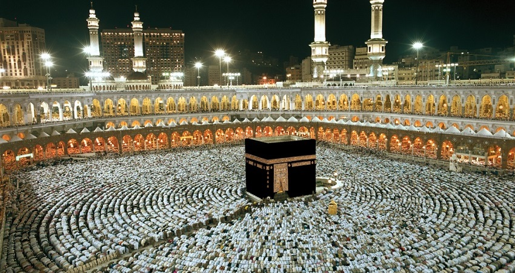

City Overview
Makkah, the holiest city in Islam, is the birthplace of the Prophet Muhammad and home to the Kaaba, located within the Masjid al-Haram. Every year, millions of Muslims visit Makkah for Hajj and Umrah, making it the spiritual epicenter of the Islamic world. Its significance as a pilgrimage site and center of Islamic heritage makes Makkah a unique and sacred place.
Explore Makkah in Pictures
Take a look at the beauty of Makkah through this image:

The Kaaba at Masjid al-Haram, the heart of Makkah and the focal point of Muslim worship worldwide.
Landmarks
Key landmarks to visit in Makkah include:
- Kaaba: The most sacred site in Islam, towards which Muslims pray five times a day.
- Masjid al-Haram: The largest mosque in the world, surrounding the Kaaba and one of the holiest sites in Islam.
- Mount Arafat: A significant site for Hajj rituals, where millions of Muslims gather for the Day of Arafah, the climax of the Hajj pilgrimage.
- Jabal al-Noor: The mountain where the Cave of Hira is located, where the Prophet Muhammad received the first revelation from the angel Jibreel (Gabriel).
- Mina: The site of the symbolic stoning of the devil, a key ritual during Hajj.
Activities
Experience a variety of activities in Makkah:
- Participating in the sacred rituals of Hajj and Umrah, which are essential acts of worship for Muslims.
- Exploring Islamic history and culture by visiting landmarks such as the Cave of Hira and Jabal al-Noor.
- Shopping for souvenirs and local products, such as dates, perfumes, and prayer rugs, at the bustling souks.
- Visiting the historical museums and Islamic centers to learn more about the significance of Makkah in Islamic history.
Events
Makkah hosts numerous events and religious activities throughout the year, including:
- Hajj: The annual pilgrimage that takes place during the Islamic month of Dhu al-Hijjah, bringing together Muslims from all over the world.
- Umrah Season: An ongoing pilgrimage that Muslims perform at any time of the year, although it is particularly busy during the months of Ramadan.
- Ramadan Events: Special prayers, religious gatherings, and Iftar celebrations throughout the holy month of Ramadan.
Learn More
To learn more about Makkah, click here.